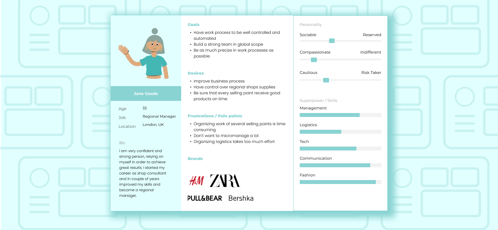
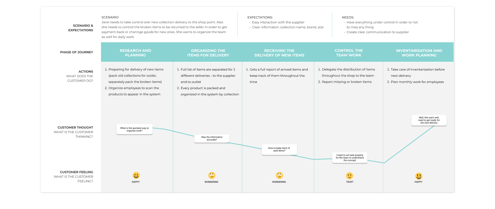
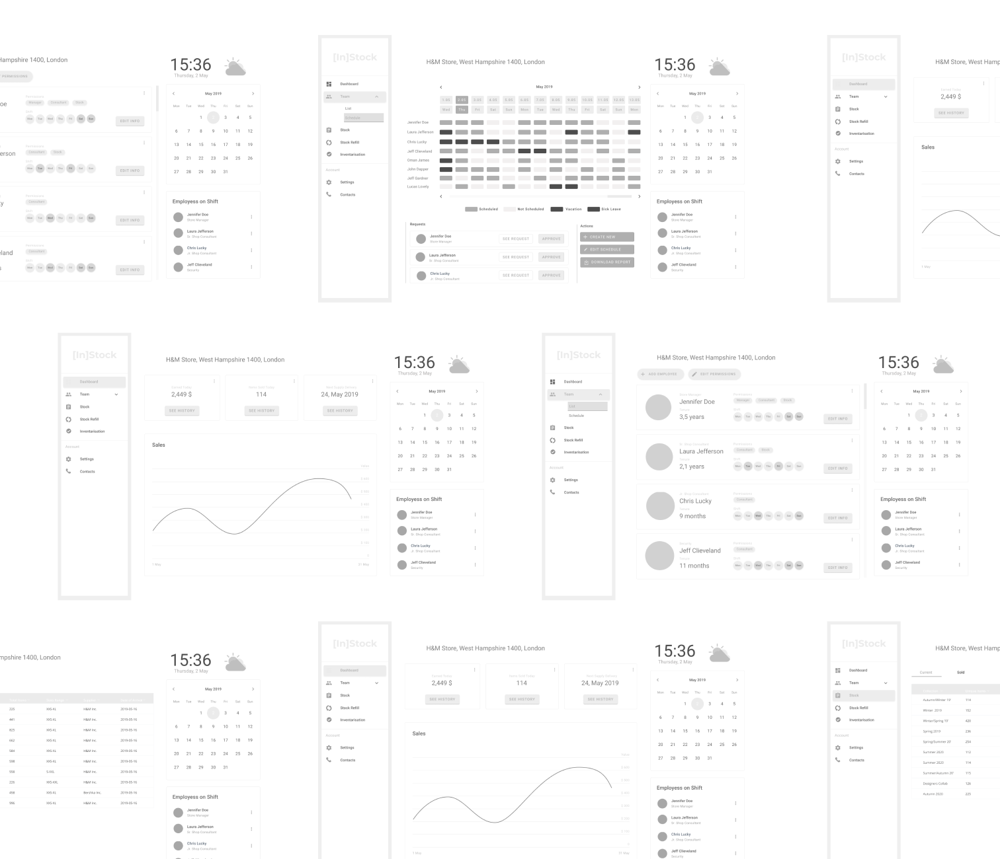
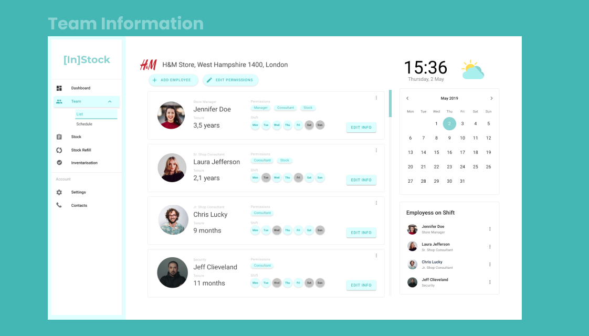
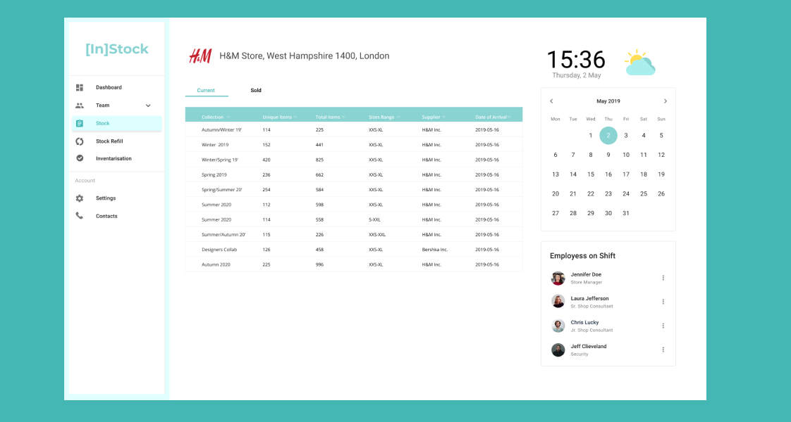
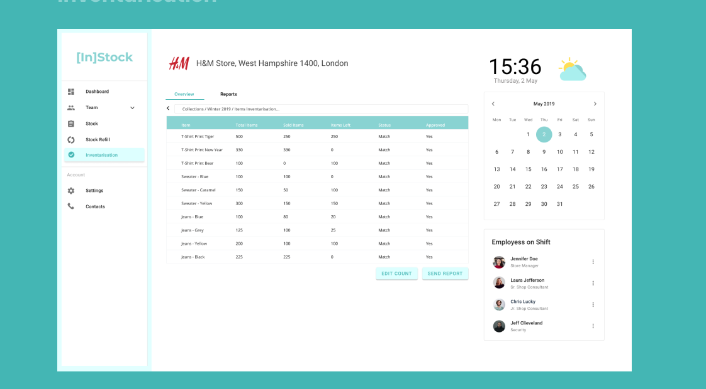

Retail runs on stock — and stock ran on spreadsheets
Store teams were tracking thousands of products across collections, deliveries, and returns in overloaded Google Sheets — duplicated tabs, manual counts, and no way to see the state of a store at a glance. [In]Stock is a supplies-management web app that gives store and regional managers one clear view of stock, staff, and deliveries.
The project followed a five-phase Design Thinking process: Discover (1 week) → Empathise (2.5 weeks) → Ideate (1 week) → Design (3 weeks) → Develop (4 weeks), with stakeholders involved at every stage gate.
Two days in a workshop room beat two months of guessing
We opened with a two-day online workshop with the client to map the business strategy, growth plans, and where software could actually move the needle. Stakeholder interviews followed — the leadership knew their pain points remarkably well and brought insights that shaped the whole product.
A business goals & value-mapping session distilled three pillars: Need to Grow (scale to new locations without scaling admin), Benefits (measurable time savings on daily operations), and Loyalty (a tool employees actually want to use, supporting retention and career growth).
Meeting the people behind the spreadsheets
I interviewed employees across store locations — managers, consultants, and senior staff — and shadowed how they actually worked. The finding was consistent: capable, friendly teams spending hours of every shift on manual data entry that the system should have been doing for them.
The research crystallised into Jane Goods — a 33-year-old regional manager in London overseeing several selling points for brands like H&M, Zara, Pull&Bear, and Bershka. Confident and ambitious, but forced to micromanage because organizing logistics across stores took too much effort.


From sticky-note chaos to a clean information architecture
User flows and a three-lane brainstorm turned research insights into structure. The site map settled on a dashboard with four functional pillars — Team (employees, shifts, permissions), Stock (current state by collection), Stock Refill (deliveries and returns), and Inventarisation (counts and reports) — ordered so that everything under MVP shipped first.
Sketches → wireframes → a UI that disappears into the work
Low-fidelity paper sketches let us break layouts cheaply; high-fidelity wireframes then locked the data hierarchy before a single color was applied. Only then came visual design — a calm mint-teal system with generous whitespace, so a screen full of stock numbers still reads at a glance during a busy shift.

One glance, full control of the store
The dashboard answers a manager's first three questions — how are sales, who's on shift, when is the next delivery — without a single click. Deeper screens keep the same rhythm: persistent navigation, a live store header, and the calendar and shift roster always within reach.



#3CB4AB
#1D6F68
#D9F2EF
#FFFFFF
Hours back, every single day
The validated concept turned a spreadsheet-driven routine into a two-hour daily saving per employee, freed up two positions per location for customer-facing work, and gave regional managers like Jane a real-time picture of every store they run. Just as importantly, the process — workshops, research, and testing before pixels — meant the client shipped with confidence instead of assumptions.